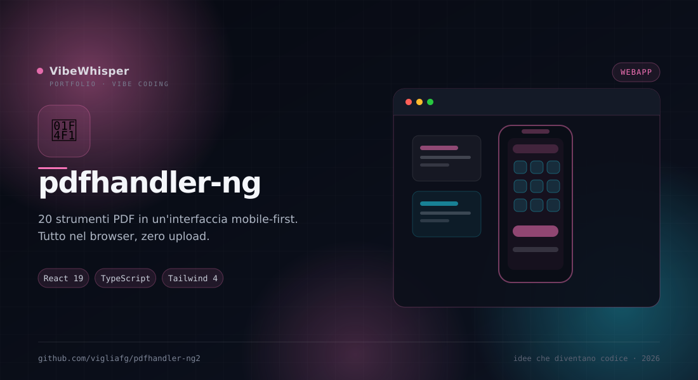

pdfhandler-ng
Versione responsive e mobile-first di pdfhandler: gli stessi 20 strumenti PDF, con drawer, bottom sheet e target touch da 44px.
📖 Cos'è
pdfhandler-ng è la variante responsive e mobile-first di pdfhandler. Mantiene tutti i 20 strumenti PDF dell'originale — estrazione, inserimento, rotazione, unione, divisione, filigrane, numeri di pagina, cifratura AES-256 e altro — ma riorganizza l'interfaccia per desktop, tablet e smartphone. Al posto di prompt e confirm nativi arrivano dialoghi personalizzati: bottom sheet su mobile e modali centrati su desktop. Tutto avviene nel browser, senza upload su server esterni.
👤 A chi serve
È pensata per chi manipola PDF da smartphone o tablet, oltre che da desktop, e per chi vuole un'interfaccia touch senza rinunciare agli strumenti di un editor completo. È utile a studenti, uffici e professionisti che ricevono PDF via email o chat e devono sistemarli subito, senza installare software né caricare documenti riservati su un sito.
⚙️ Come funziona
L'app ha due modalità: Viewer, un lettore con layout singolo, doppio o triplo, zoom, rotazione e navigazione; Editor, una griglia di miniature con selezione, range e riordino. Un drawer laterale raccoglie navigazione e strumenti, una bottom toolbar è visibile solo su mobile e la TOC diventa un pannello laterale su desktop o un bottom sheet su mobile. I dialoghi sono componenti custom che si adattano al breakpoint. Se scegli uno strumento di pagina dal Viewer, l'app passa automaticamente all'Editor.
🎯 Perché pdfhandler-ng
Perché gli strumenti PDF non dovrebbero obbligarti a tornare al computer. pdfhandler-ng porta la stessa potenza su uno schermo piccolo, con controlli grandi, pannelli a scomparsa e nessun documento che lascia il dispositivo.
✨ Caratteristiche Principali
- Mobile-first — Drawer a schermo intero su mobile, overlay su tablet, sidebar persistente su desktop
- Bottom toolbar — Accesso rapido a View, Edit, Contents e Tools solo sui dispositivi piccoli
- Viewer flessibile — Layout singolo, doppio o triplo, zoom, fit-to-width, rotazione e salto pagina
- Editor a miniature — Griglia da 2 a 6 colonne, selezione con shift, riordino e contatore
- Dialoghi custom — Bottom sheet con maniglia su mobile, modali centrati su desktop, niente prompt nativi
- TOC adattiva — Pannello laterale su desktop, bottom sheet scrollabile su mobile
- Auto-switch — Uno strumento di pagina scelto dal Viewer apre subito l'Editor
- Touch target — Tutti i controlli interattivi rispettano i 44px minimi (WCAG 2.5.5)
- 20 strumenti — Estrai, inserisci, elimina, ruota, copia, sposta, inverti, dividi, unisci, filigrana, cifra e altri
🏗️ Come Funziona
- Apri l'app nel browser: non serve caricare nulla su un server
- Carica un PDF e usa il Viewer per leggerlo con layout e zoom desiderati
- Passa all'Editor per selezionare le pagine e applicare uno strumento
- Apri il drawer per gli strumenti del documento: metadati, filigrana, numeri, cifratura
- Su mobile usa la bottom toolbar per passare rapidamente tra le sezioni
- Scarica il risultato: il file viene generato localmente nel browser
📦 Installazione
# Requisiti: Node.js >= 18 e npm git clone https://github.com/vigliafg/pdfhandler-ng2.git cd pdfhandler-ng2 npm install npm run dev # Apri http://localhost:5174 # Build di produzione npm run build # Output nella cartella dist/
💡 Casi d'Uso
- PDF dal telefono — Sistemare un documento ricevuto via email senza passare al computer
- Studio — Estrarre, ruotare o unire dispense e slide da tablet
- Ufficio — Aggiungere numeri di pagina o filigrane a un contratto, in locale
- Privacy — Manipolare documenti riservati senza caricarli su servizi esterni